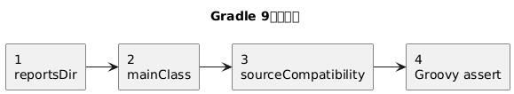
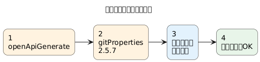
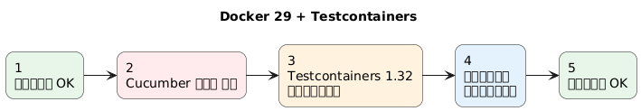
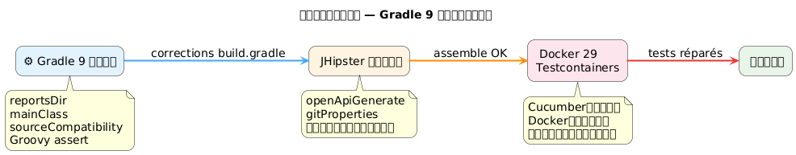
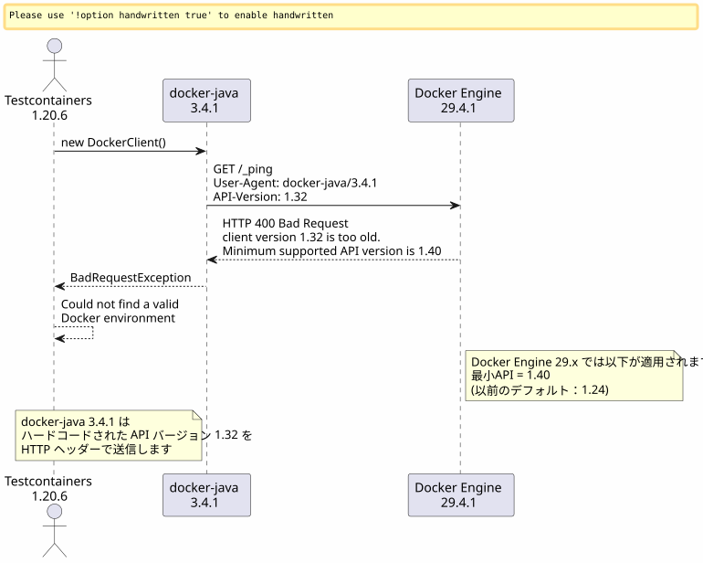
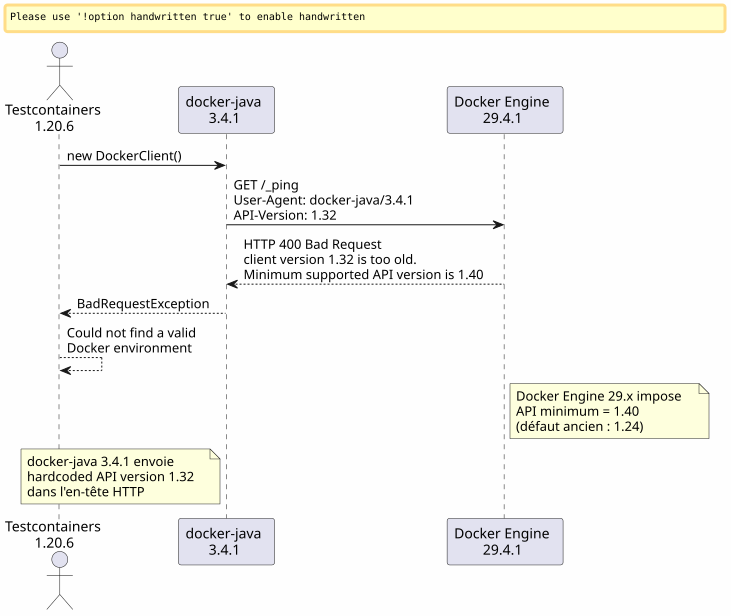
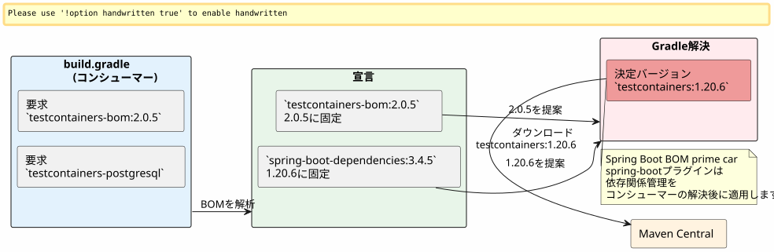
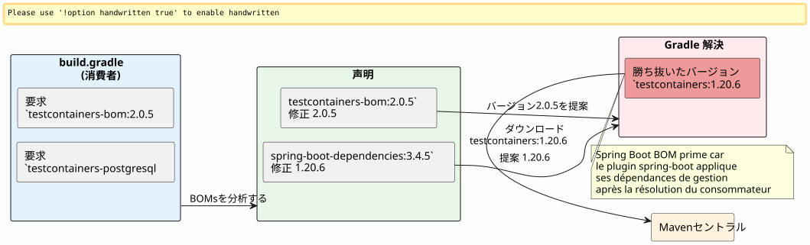
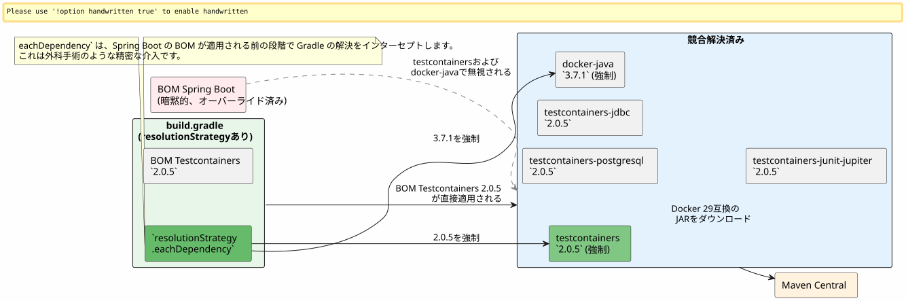
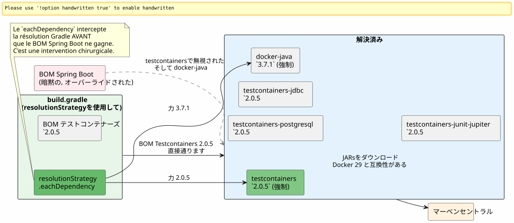

Gradle 9、Docker 29、そしてTestcontainersが衝突したとき：JHipsterビルドのデバッグ
公開日: 25 April 2026
- シーン：JHipsterプロジェクト、ロードされなくなったビルド
- エラー 1: ファントム変数 `reportsDir
- エラー 2 :
main = \"…\"は Gradle 9 で存在しなくなりました - エラー 3 :
sourceCompatibilityはもはやプロジェクトのプロパティではありません - エラー 4 : 3項演算子の Groovy アサーション
- エラー 5 : 暗黙の依存
compileKotlin→ `openApiGenerate - エラー 6 :
generateGitPropertiesで壊れる `FilterOutputStream.write() - 最後に：Testcontainersが舞台に登場
- Phase 1 : docker-javaのトラック
- Phase 2: ウェブ検索とGitHubのパンくずリスト
- フェーズ3 : リネームされたアーティファクトの罠
- フェーズ4：解決を強制する
- 最終結果
- 修正のサマリーテーブル
- 結論
あなたは、シンプルな瞬間を経験したことがあります。`./gradlew build`1日100回も起動していると、突然、これまで見たことのないエラーでクラッシュするようになる？これを11回連続のエラーで掛け合わせ、Docker Engine 29の互換性不足をたっぷりと加え、10年使っていたAPIが消えてしまうGradle 9を振りかけると。これが完全なログです。
目的：不互換性のシリーズを示す。

目的：壊れたプラグインを隔離する。

�図3 — Docker 29 / Testcontainers
目的 : 実行時問題。


シーン：JHipsterプロジェクト、ロードされなくなったビルド
プロジェクト`edster`2024年に生成されたJHipsterアプリケーションです。ルートビルドスクリプト`build.gradle`数か月間、安定していた。それから、バージョンアップすることに決めた：
コンポーネント |
ターゲットバージョン |
グラドル |
9.4.1 |
ジャバ |
21.0.11-tem (Eclipse Temurin) |
JHipster |
8.x (フレームワーク`tech.jhipster:jhipster-framework:8.11.0`) |
スプリングブート |
3.4.5 |
コトリン |
2.3.0 |
Docker Engine |
29.4.1 (API 1.54) |
Javaバージョンの変更はSDKMANを通じて行われます :
sdk use java 21.0.11-tem初回起動 :
$ ./gradlew build --no-daemon
FAILURE: Build failed with an exception.
* Where:
Build file '/home/.../edster/build.gradle' line: 18
* What went wrong:
An exception occurred applying plugin request [id: 'jhipster.cucumber-conventions']
> Failed to apply plugin 'jhipster.cucumber-conventions'.
> Could not create task ':cucumberTest'.
> Could not create task ':consoleLauncherTest'.
> Could not set unknown property 'reportsDir' for task ':consoleLauncherTest'ビルドスクリプトのロードさえ行われず、問題は`buildSrc/src/main/groovy/jhipster.cucumber-conventions.gradle`.
エラー 1: ファントム変数 `reportsDir
スクリプト`jhipster.cucumber-conventions.gradle`含む：
tasks.register('consoleLauncherTest', JavaExec) {
dependsOn(testClasses)
String cucumberReportsDir = file("$buildDir/reports/tests")
outputs.dir(reportsDir) // <-- reportsDir n'existe PAS
classpath = sourceSets["test"].runtimeClasspath
main = "org.junit.platform.console.ConsoleLauncher"
// ...
}定義された変数は`cucumberReportsDir`. 使用されているものは`reportsDir`-- どこにも定義されていない。
修正:`outputs.dir(cucumberReportsDir)`
エラー 2 : main = \"…\" は Gradle 9 で存在しなくなりました
即時フォローアップ：
Could not set unknown property 'main' for task ':consoleLauncherTest' of type org.gradle.api.tasks.JavaExec.Gradle 9はプロパティを削除します`main`の利益のために`mainClass`タスクについて`JavaExec`.
�訂正:`mainClass = "org.junit.platform.console.ConsoleLauncher"`
エラー 3 : sourceCompatibility はもはやプロジェクトのプロパティではありません
新しいエラー：
Could not set unknown property 'sourceCompatibility' for root project 'edster' of type org.gradle.api.Project.ルートスクリプトは持っていた：
sourceCompatibility=17
targetCompatibility=17グラドル9はルートレベルでこれらのプロパティを削除します。これらのプロパティはブロック内に存在する必要があります。java.
修正 :
java {
sourceCompatibility = JavaVersion.VERSION_21
targetCompatibility = JavaVersion.VERSION_21
}エラー 4 : 3項演算子の Groovy アサーション
古いスクリプトには:
assert System.properties["java.specification.version"] == "17" || "21" || "24"Groovyでは,"21" et "24"`は strings truthy。 式は … に解決されます(… == "17") || true || true`, これは常に真である — しかし、構文は望まれる厳密なアサーションには無効です。
修正:
assert System.properties["java.specification.version"] in ["17", "21", "23", "24"]エラー 5 : 暗黙の依存 compileKotlin → `openApiGenerate
ビルドが進行しています。Kotlinのコンパイルに成功しました。その後：
Task ':compileKotlin' uses this output of task ':openApiGenerate'
without declaring an explicit or implicit dependency.Gradle 9 は暗黙的なタスク間の依存関係を拒否します。以来`compileKotlin`生成されたソースを読む`openApiGenerate`、リンクを宣言する必要がある。
�訂正中に`build.gradle`:
afterEvaluate {
tasks.named("compileKotlin").configure {
dependsOn(tasks.named("openApiGenerate"))
}
}Le `afterEvaluate`必要です なぜなら`openApiGenerate`est une extension (plugin OpenAPI Generator) et non une tâche directement accessible pendant la phase de configuration. → Japanese translation:
これは OpenAPI Generator プラグインの拡張機能であり、構成フェーズにおいて直接アクセス可能なタスクではありません。
エラー 6 : generateGitProperties で壊れる `FilterOutputStream.write()
Javaのコンパイルが通ります。リソースが処理されます。次に：
> Task :generateGitProperties FAILED
No signature of method: java.io.FilterOutputStream.write() is applicable for argument types: (Integer) values: [103]プラグイン`gradle-git-properties`version 2.5.0 は Java 21 / Gradle 9 と互換性がありません。内部バグが呼び出しを試みます`write(int)`Groovy経由でそれを閉じたストリーム上で
修正中に`gradle.properties` :
gitPropertiesPluginVersion=2.5.7最後に：Testcontainersが舞台に登場
今のところ、これは純粋な "build script debugging" でした。各エラーは、ビルドスクリプトにおけるGradle 9またはJava 21の互換性の問題でした。前述の6つの修正後、`./gradlew assemble`成功裏に通ります。
しかし`./gradlew build`実行し、Cucumberのテストも Testcontainers を使って一時的な PostgreSQL を起動します。
Could not find a valid Docker environment.
EnvironmentAndSystemPropertyClientProviderStrategy: failed with exception BadRequestException
(Status 400: {"message":"client version 1.32 is too old. Minimum supported API version is 1.40"}
UnixSocketClientProviderStrategy: failed with exception BadRequestException
(Status 400: {"message":"client version 1.32 is too old. Minimum supported API version is 1.40"}

Phase 1 : docker-javaのトラック
まず最初に、Testcontainers が使用する Docker Java クライアントは、API のバージョンを送信します。1.32`そのHTTPハンドシェイクにおいてですが、Docker Engine 29.4.1は最低限`1.40. 問題はクライアント側にあり、デーモン側ではありません。
Testcontainers 1.20.6 によって解決された docker-java のバージョンの確認 :
$ ./gradlew dependencies --configuration testRuntimeClasspath | grep docker-java
+--- com.github.docker-java:docker-java-api:3.4.1
+--- com.github.docker-java:docker-java-transport:3.4.1docker-java 3.4.1（Testcontainers 1.20.6 から）。docker-java の最新のパブリックバージョンは 3.5.1 です。バージョンアップを強制するために`resolutionStrategy`ブロックの中`configurations` de build.gradle:
configurations {
all {
resolutionStrategy.eachDependency { details ->
if (details.requested.group == "com.github.docker-java"
&& details.requested.name.startsWith("docker-java")) {
details.useVersion("3.5.1")
}
}
}
}ビルドの再起動。同じエラー：client version 1.32 is too old。
Gradleキャッシュの確認：JARsは正しく再ダウンロードされましたが、エラーは依然として残っています。docker-java 3.5.1 はまだ送信しています`1.32`. このバージョンはしたがって Docker Engine 29.4.1 に対して十分ではありません。
�浄化のアクション: Gradleキャッシュを完全にクリアして、念のため :
rm -rf ~/.gradle/caches
rm -rf /path/to/project/.gradleパージ後に完全再起動。同じエラー。
Phase 2: ウェブ検索とGitHubのパンくずリスト
docker-java 3.5.1 は不十分です。あとは、誰かがこの問題に正確に遭遇したかどうかを調べるだけです。
testcontainers-java と docker-java の issue に対するターゲット検索:
site:github.com/testcontainers "client version 1.32 is too old"
site:github.com/docker-java "client version 1.32" Docker Engine 29最初の即時の結果：
-
testcontainers-java#11210—
[Bug]: client version 1.32 is too old. Minimum supported API version is 1.44 -
testcontainers-java#11212—
[Bug]: Docker 29.0.0 could not find a valid Docker environment -
testcontainers-java#11491—
[Bug]: Incompatibility in Ubuntu Github runners with Docker Engine 29.1.*
パンくずリストは明確です : Docker Engine 29.x は最低 API バージョンを`1.24`(古い欠陥) に`1.40`. Testcontainers 1.20.x は docker-java 3.4.x を使用し、API バージョンを送信してネゴシエートします。1.32. デーモンは礼儀正しくしかし固く拒否します。
issue #11491では、メンテナーが返信します:
_ ハイ、バージョン2.0.3で動作しているプロジェクトをGHランナー上でエンジン29.1を使用して実行しており、正常に動作しています。 皆さん、バージョンの競合がないかどうか確認していただけますか？ お忘れなく、すべてのモジュールはプリフィックスが付いていました`testcontainers-。 それで、バージョン2.xから始めて、私たちはから進んできた`postgresql to testcontainers-postgresql _
この回答には重要な情報が2つ</think> </think> (Note: Since no French text was provided after the colon, there is nothing to translate, so the output is empty.)
-
Testcontainers 2.0.3+ は問題を解決します
-
モジュールはプレフィックス `testcontainers-`を付けてリネームされます
フェーズ3 : リネームされたアーティファクトの罠
名前の変更は厳しいです。Testcontainers 2.x では、以前の名前のいずれもその名前では機能しなくなりました：
旧名 (1.x) |
新しい名前 (2.x) |
|
|
|
|
|
|
|
変更されていない |
最初の試み : Testcontainers BOM 2.0.5 と新しいアーティファクト名を適用する`build.gradle`。
dependencies {
testImplementation platform("org.testcontainers:testcontainers-bom:2.0.5")
testImplementation "org.testcontainers:testcontainers-postgresql"
testImplementation "org.testcontainers:testcontainers-jdbc"
testImplementation "org.testcontainers:testcontainers-junit-jupiter"
testImplementation "org.testcontainers:testcontainers"
}./gradlew build
FAILURE: Could not find org.testcontainers:jdbc:2.0.5.
Could not find org.testcontainers:junit-jupiter:2.0.5.testcontainers-bomのBOMだけでは十分ではありません。なぜ？ Spring Boot 3.4.5は独自の依存関係管理BOMを公開しているため（spring-boot-dependencies) 誰勝つTestcontainersのBOMの transitive 解決において。 Spring Bootは修正します。testcontainers à 1.20.6, したがって、Spring Boot BOMに明示的に含まれていないすべてのアーティファクト（新しいものなど）は`testcontainers-*) 彼らは古い名前に向かって解決する`1.20.6-- このバージョンでは存在しなくなりました。
検査している際の`dependencies --configuration testRuntimeClasspath`, 見つかる :
+--- org.testcontainers:testcontainers -> 1.20.6 (*)
| \--- org.testcontainers:testcontainers:2.0.5 -> 1.20.6

フェーズ4：解決を強制する
戦略は二重になります：


最終修正中に`build.gradle`:
configurations {
all {
resolutionStrategy.eachDependency { details ->
if (details.requested.group == "com.github.docker-java"
&& details.requested.name.startsWith("docker-java")) {
details.useVersion("3.7.1")
}
if (details.requested.group == "org.testcontainers"
&& details.requested.name == "testcontainers") {
details.useVersion("2.0.5")
}
}
}
}
dependencies {
testImplementation platform("org.testcontainers:testcontainers-bom:2.0.5")
testImplementation "org.testcontainers:testcontainers-jdbc"
testImplementation "org.testcontainers:testcontainers-junit-jupiter"
testImplementation "org.testcontainers:testcontainers-postgresql"
testImplementation "org.testcontainers:testcontainers"
// ... autres dépendances Spring Boot
}Le `resolutionStrategy.eachDependency`はBOMをバイパスする唯一の方法だ`spring-boot-dependencies`管理されている Spring Boot プラグインによって。等しさのテストは`details.requested.name == "testcontainers"`は意図的に制限的です：コアモジュールのみを強制します。モジュール`testcontainers-*`Testcontainers 2.0.5のBOM（明示的に宣言したもの）に従います。
最終結果
$ ./gradlew build --no-daemon
> Task :consoleLauncherTest
[2 containers found]
[2 containers started]
[2 containers successful]
BUILD SUCCESSFUL in 1m 16sTestcontainers 2.0.5 + docker-java 3.7.1 は、Docker Engine 29.4.1 を介して PostgreSQL コンテナを finally 作成できるようになりました。最終的なビジネスエラー（Cucumber テストでの HTTP 500）は、ビルドスクリプトとは完全に独立したアプリケーションの問題です。
修正のサマリーテーブル
| # | ファイル | 問題 | 修正 |
|---|---|---|---|
1 |
|
変数`reportsDir`存在しない |
|
2 |
|
`main`非推奨の Gradle 9 |
|
3 |
|
`sourceCompatibility`トップレベルでは Gradle 9 は禁止されています |
ブロック`java { sourceCompatibility = JavaVersion.VERSION_21 }` |
4 |
|
Groovyのアサーションの構文が無効です |
|
5 |
|
暗黙的依存`compileKotlin`→ |
|
6 |
|
`gitPropertiesPluginVersion`互換性のない Java 21 |
|
7 |
Gradle キャッシュ |
docker-java 3.5.1 テスト済み、解決されたが不十分です |
パージュ + 通過 docker-java 3.7.1 |
8 |
|
Testcontainers 1.20.6 は Docker Engine 29 と互換性がありません |
Testcontainers 2.0.5 + プレフィックスの強制`testcontainers-*`+ resolutionStrategy と Spring Boot BOM の比較 |
結論
JHipster/GradleのビルドがGradle 9 + Docker Engine 29へのアップグレード後にクラッシュする場合、エラーは2つのカテゴリに分類されます：
ビルドスクリプトのエラー(最初の6つ) : Gradle 9は、何年も機能していたプロパティと構文を削除します (sourceCompatibility=, main =, `reportsDir`これらは新しいAPIを知った後の機械的な移行です。
Dockerランタイムエラー(最後の2つ) : Docker Engine 29.4.1 は API バージョン < 1.40 のクライアントを除外します。 Testcontainers 1.20.6 (Spring Boot 3.4.5 によって強制されます) は、API バージョン 1.32 を送信する docker‑java 3.4.1 を使用します。 問題を解決するのは、アーティファクトの名前変更とバージョンの強制を経由で行われる Testcontainers 2.0.5 + docker‑java 3.7.1 のみです。`resolutionStrategy.eachDependency`Spring Bootの暗黙のBOMを回避する唯一の手段として。
関連記事
31 May 2026